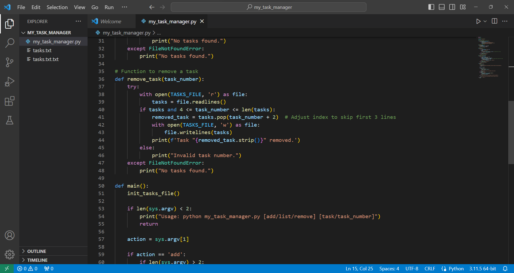

Project Documentation
Linux Task Management Application
Overview
The Linux Task Management Application is a command-line tool designed to help users manage their tasks efficiently on a Linux system. This application allows users to add, list, and remove tasks with ease.
Features
Add Task: Users can add a new task to the task list.
List Tasks: Users can view a list of all tasks.
Remove Task: Users can remove a specific task by its index.
quit: Users can end process by using this command.
Prerequisites
Before using the application, ensure you have the following:
Python installed on your Linux system.
A text file named tasks.txt in the same directory as the script to store tasks.
Program & Execution
Let's check out the python code I used for this linux project!

Conclusion
The Linux Task Management Application simplifies task management on Linux systems, making it easy to add, list, and remove tasks from the command line.